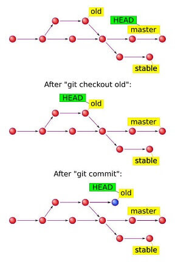

Theory
Version Control System (VCS) for tracking changes in computer files.
- Distributed version control.
- Coordinates work between multiple developers.
- Who made what changes and when.
- Revert back anytime.
- Local and remote repositories.
States
| Modified |
|
|---|---|
| Staged |
|
| Committed |
|
HEAD
Pointer to current branch (local).

Workflow
1. Get project
git clone 'repoUrl'2. Create feature branch
git branch 'feature' # Create feature branch
git checkout 'feature' # Change to feature3. Commit changes
Check status and pull daily.
git add -A # Stage changes
git commit -m "message" # Commit changes
git status4. Push to feature
git push -u origin 'feature' # -u enables "git push" only
git branch -a # Check branches5. Merge feature with master (CAUTION)
When feature is done.
Create a pull request, or do the merge yourself:
git checkout 'master' # Change to master
git pull origin 'master' # Update master from origin
git merge 'feature' # Merge with feature
git push origin 'master' # Push master to origin6. Delete feature
When already merged.
git branch --merged # Check merged branches
git branch -d 'feature' # Delete local feature branch
git push origin --delete 'feature' # Delete remote feature branch
git branch -a # Check branches.gitignore
List of files you dont want to track.
Empty directories are ignored by default.
/dir # Directories
*.txt # WildcardsLinux Setup
config
git config --global user.name 'Jamezuki'
git config --global user.email 'jamezuki@gmail.com'
git config --global core.editor "code --wait"
git config --global init.defaultBranch 'master'
git config --global color.ui auto
git config --listSSH
Check if a key exists
ls ~/.ssh/id_rsa.pubCreate key
ssh-keygen -C 'jamezuki@gmail.com'
# location ➜ Enter
# passphrase ➜ EnterLink SSH key
GitHub ➜ Settings ➜ SSH and GPG keys ➜ New SSH Key
Type key description.
cat ~/.ssh/id_rsa.pubCopy and Paste key content.
Windows Setup
Use Git Bash
config
git config --global user.name 'Jamezuki'
git config --global user.email 'jamezuki@gmail.com'SSH
Check if a key exists:
dir ~/.sshCreate key:
ssh-keygen -t ed25519 -C "jamezuki@gmail.com"
# location ➜ Enter
# passphrase ➜ EnterAdd SSH key to the ssh-agent
Auto-launching ssh-agent on Git for Windows
touch ~/.profileAdd this to .profile
env=~/.ssh/agent.env
agent_load_env () { test -f "$env" && . "$env" >| /dev/null ; }
agent_start () {
(umask 077; ssh-agent >| "$env")
. "$env" >| /dev/null ; }
agent_load_env
agent_run_state=$(ssh-add -l >| /dev/null 2>&1; echo $?)
if [ ! "$SSH_AUTH_SOCK" ] || [ $agent_run_state = 2 ]; then
agent_start
ssh-add
elif [ "$SSH_AUTH_SOCK" ] && [ $agent_run_state = 1 ]; then
ssh-add
fi
unset envReset Git Bash
Link SSH key
GitHub ➜ Settings ➜ SSH and GPG keys ➜ New SSH Key
Type key description.
clip < ~/.ssh/id_ed25519.pub
# Copies the contents of the id_ed25519.pub file to your clipboardPaste key content.
init
For projects that already exist locally, but doesn't have Git yet.
Transforms the current directory into a Git repository.
Creates .git directory.
git initRelated
clone
The remote already exists.
Downloads a remote repository, including all of the files, branches, and commits.
git clone 'https or ssh'add
Adds changes to staging area (index).
git add -A # Stages all
git add 'file' # file/dirRelated
commit
Save index (staged) to local repository.
Created on current branch (wherever HEAD is pointing).
commit -m
git commit -m "Subject
* Separate subject from body with a blank line.
Subject
* Use imperative mood.
* Capitalize first letter.
* Do not end with a period.
* 50 characters max.
Body
* Wrap at 72 characters."commit -a
- Skips the staging phase.
- Stages files that are already being tracked.
git commit -am "Subject"commit --amend
- Replaces the most recent commit with a new commit.
- Unstaged changes will not get committed.
# Change last commit message
git commit --amend -m "Subject"
# Use last commit message
git commit --amend --no-editstatus
Shows the current state of working directory and staging area.
Shows merge conflicts.
git statuslog
Shows commit logs
git log
git log --oneline
git log --graph
git log -3 # Show last 3
git log --after="yyyy-mm-dd"
git log --after="yyyy-mm-dd" --before="yyyy-mm-dd"
git log --author="James"
git log -- 'file'
git log -S"content"
git log --mergesdiff
Shows differences between two inputs.
git diff # Unstaged changes
git diff --cached # Staged but not committed
git diff 'commit' 'commit'
git diff 'branch' 'branch'Output
@@ -262,6 +262,9 @@ # Starting from line 262
- something # Deleted
+ something # Addedremote
Manages the set of remotes that are tracked by local repository.
git remote -v # Show remotes
git remote add 'name' 'URL' # Add a remote
git remote remove 'name' # Remove a remoteorigin is the default name associated with the URL.
Communicating with remote
fetch
Updates remote-tracking branches (origin/x)
git fetch # remote origin
git fetch --all # all remotes| x | Local |
|---|---|
| origin x | Remote |
| origin/x |
|
Related
pull
Updates from remote:
- Current branch
- Remote tracking branches
pull = fetch + merge
git pull
git pull --all # Multiple remotes--rebase
- Local commits occur after new remote commits.
- No merge commit.
Related
push
Uploads current branch commits to remote.
git push
git push --all # All branches-f
(DANGEROUS) Force a push, can delete or overwrite commits.
git push -fRelated
branch
| Types | |
|---|---|
| x | Local |
| origin x | Remote |
| origin/x |
|
Create
git branch 'branch'Delete
# Local
git branch -d 'branch' # --delete (if merged)
git branch -D 'branch' # --delete --force
# Remote
git push origin -d 'branch' # --delete (if merged)
git push origin -D 'branch' # --delete --force Info
git branch -a # Show all branches
git branch --merged # Show merged branchesRelated
checkout
Switches between:
- Branches
- Commits
- File versions
Working directory must be clean to checkout.
Branches
Moves HEAD to branch tip.
git checkout 'branch'Commits
Moves HEAD to commit.
git checkout 'commit'- Detached HEAD state
- Read only
Create a new branch before adding commits to a detached HEAD.
checkout branch to return.
Files
# Reset file to commit
git checkout 'commit' -- 'file'
# Reset file to HEAD
git checkout -- 'file'merge
Combine two branches.
- Preserves history
- Creates a merge commit
checkout first
# merge branch to current branch
git merge 'branch'
# merge commit to current branch
git merge 'commit'merge conflicts
Competing line changes
You must choose which changes to incorporate from the different branches in new commit.
git status
# 1. See which files has conflicts.
# 2. Edit the files to fix the conflicts.
<<<<<<< HEAD
head conflicts
=======
branch conflicts
>>>>>>> BRANCH
# 3. Delete the conflicts marks.
# 4. Commit
git add -A
git commit -m "Resolved merge conflict"Removed file
You must choose wheter to delete or keep the removed file in new commit.
git status
# 1. See which files has conflicts.
# 2. Fix by:
# * git add file - keeps file
# * git rm file - removes file
# 3. Commit
git commit -m "Resolved merge conflict"fast-forward
- Occurs when master is not diverged from feature.
- There is no merge commit in fast forward merge.
Related
rebase
Reapply commits on top of another base tip.
Change base of current branch (re-base).
CAUTION
- Never rebase public branches that are shared.
- Rebasing results in brand new commits.
checkout first
# Moves target on top of newBase
git rebase 'newBase'
git rebase 'newBase' 'target'rebase -i
Opens editor to make changes.
git rebase -i --root # All commits
git rebase -i HEAD~3 # last 3 commits| p, pick | Target of changes |
|---|---|
| r, reword | Change commit message |
| s, squash | Melds commits |
| f, fixup | Squash without commit |
# fixup C3 and C2 into C1
p C1
f C2
f C3Related
revert
Undo commits
- Safest way to change history.
- Creates a new commit.
- Does not delete existing commits.
- Does not need push --force
git revert 'commit'reset
Undo commits
- A - B - C (master)
# HEAD ➜ C
# index ➜ C
# Working directory ➜ Creset --soft
HEAD only
git reset --soft B
# HEAD ➜ B
# index ➜ C (Staged)
# Working directory ➜ Creset --mixed
HEAD and index
git reset --mixed B
# HEAD ➜ B
# index ➜ B
# working directory ➜ Creset --hard
HEAD, index and filesystem
git reset --hard B
# HEAD ➜ B
# index ➜ B
# working directory ➜ BRelated
reflog
Log of every commit that HEAD has pointed to.
- Local only
- May be purged automatically
git reflog
git reflog 'branch'
git reflog --allreflog + reset
git reflog 'branch'
git checkout 'branch'
git reset --hard 'commit'Related
clean
- deletes untracked files from working directory
git clean -fdx| -f | force |
|---|---|
| -d | directories |
| -x | ignored files |
rm
Removes files
# Removes from git & filesystem
git rm 'file'
git rm -r 'dir'rm --cached
# Removes from index
git rm --cached 'file'GitHub merge
- Create Github repository.
- git init
- .gitignore
git remote add origin 'ssh'
git add -A
git commit -m "msg"
git pull origin master --rebase
git add -A
git push --set-upstream origin master
Untrack
git rm --cache "file"Reset to origin
git fetch origin
git reset --hard origin/master
git clean -fdxCheck commited files
# first level
git diff-tree --name-status HEAD
# all levels (recursive)
git diff-tree --name-status -r HEAD
Check staged files
git diff --cached --name-status
.gitignore Express
.env
node_modules
route.rest
Object file is empty
// remove any empty object files
find .git/objects/ -type f -empty | xargs rm
// fetch down the missing objects
git fetch -p
// object store check
git fsck --full